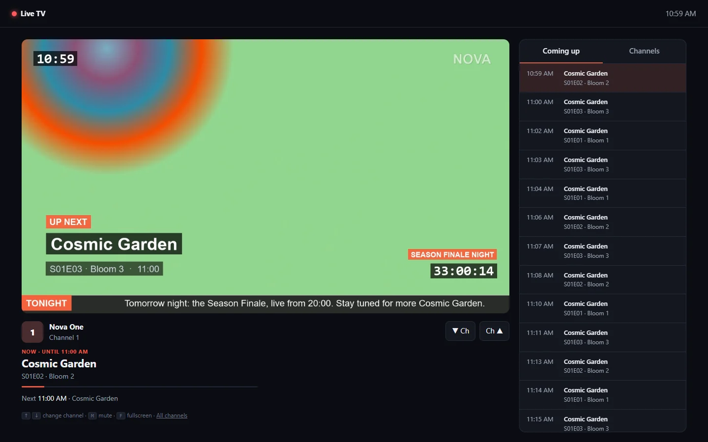
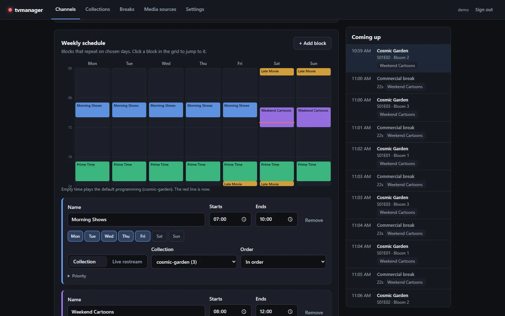
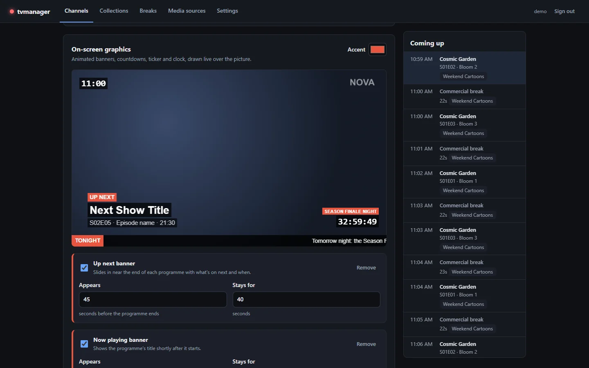
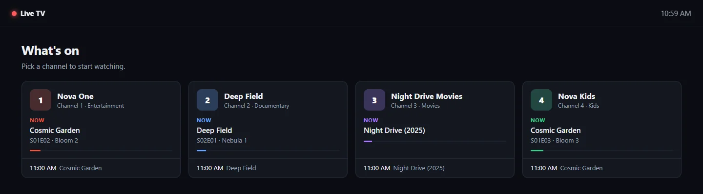

Your media library,
as live TV.
tvmanager turns Plex, Jellyfin, Emby or a folder of videos into real channels that are always on air, with commercial breaks, "Up next" banners, countdowns and schedules down to the minute.

Everything that makes it feel like TV
Not just a playlist on shuffle. Channels with a schedule, a look and a rhythm, built in a web dashboard.
Day-and-time scheduling
Weekly blocks like "Saturday morning cartoons", one-off special events, and blocks that start exactly on time.
Commercial breaks
Bumpers, ads and promos between and inside programmes, cut at chapter markers so they land on scene changes.
Animated graphics
"Up next" and "Now playing" banners, event countdowns, a ticker, a clock and an animated logo, drawn live.
Always on air
Every channel keeps its schedule whether or not anyone is watching. Tune in and you join whatever is on, at the right moment.
Plex, Jellyfin, Emby, folders
Sign in with Plex, connect Jellyfin or Emby with a key, or point at a folder. Build collections by show, genre or library.
Light on resources
Channels only encode while someone watches. Use your NVIDIA, Intel or AMD graphics card to take the load off the CPU.
Program it like a real network
Draw your week on a grid. Special events take priority, and every block starts on the dot.
- Weekly blocks on chosen days, including ones that run past midnight
- Special events on a date, with a countdown graphic leading up to them
- Hard starts: gaps are filled with bumpers and an "Up next" screen
- Live restreams: schedule an IPTV channel for a live event

The little things that sell it
Build a break once and use it on every channel. Graphics animate live and land at the right moment, even if you tune in halfway through.
- Break styles: "into break" bumper, two minutes of ads, a promo, an "Up next" card
- Mid-roll every few minutes in long programmes
- Banners, countdowns, ticker and clock in your channel's colour
- Live preview of every graphic right in the editor

Works with what you already use
An M3U playlist and XMLTV guide for IPTV apps, a built-in tuner for Plex, and a TV page for any browser.

From library to live channel
Needs Node.js 22 and ffmpeg. Then:
git clone https://github.com/weareleon/tvmanager.git
cd tvmanager
npm install
npm start
# open http://localhost:8420 and create your account